Le processus de rigging
Racourcis vers les chapitres du Cahier Technique Highline FFCAM :
Chapitre 1 : Recommandations pour l’encadrement de la pratique de la highline
Planification et organisation de l’équipe.
Il est très utile d’avoir clairement identifié à l’avance les ancrages et la distance de la sangle, ainsi que de connaître le site en personne pour savoir quel autre matériel auxiliaire l’installation demandera. Cela nous permettra de planifier et d’être plus efficaces dans le choix du matériel.
De toute façon, quand on n’a pas cette possibilité, et chaque fois que l’on ouvre un lieu pour la première fois, c’est une bonne pratique d’emporter un « surplus » de matériel, afin de garantir une exécution correcte et non limitée de l’installation.
Toujours, avant de commencer tout rig, que toutes les personnes impliquées aient un plan commun préalablement établi, ainsi que les actions à mener en cas d’imprévu, et qu’elles connaissent le matériel à utiliser et la manière dont on compte l’utiliser.
Nous organiserons et diviserons toujours le matériel par côtés avant decommencer le rig, que ce soit depuis chez nous ou sur le site, mais tout devra être bien organisé avant l’exécution.
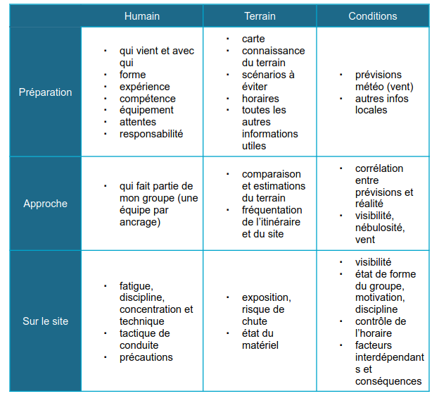
Comment faire passer la sangle d’un côté à l’autre ?
- Si la highline vous intéresse, c’est sûrement l’une des questions qui vous intrigue le plus!
A ce propos, se référrer aussi au cahier FFCAM :Ordre d’installation
Eh bien, la plupart du temps la réponse est plus simple et plus logique que vous ne le pensez !
Chaque site, selon sa topographie et les éléments faisant obstacle dans le précipice, demandera une stratégie différente qu’il vaut la peine de planifier à l’avance.
Cependant, dans la plupart des cas on utilise une TAGLINE ou cordelette auxiliaire, qui est simplement une corde de petit diamètre que l’on fait passer à travers le précipice pour relier les deux points d’ancrage ; une fois cela fait, on utilise cette tagline pour faire traverser les sangles sur lesquelles nous marcherons.
La raison principale est d’éviter d’endommager les sangles sur lesquelles nous marchons, et parce qu’il est plus facile de franchir le précipice avec un matériau plus léger.
La TAGLINE, bien qu’il s’agisse d’un composant auxiliaire, est l’un des plus importants pendant le processus de rigging ; c’est pourquoi la différence entre en avoir un de bonne ou de mauvaise qualité fera la différence entre un rigging réussi et un rigging potentiellement dangereux.
Nous cherchons principalement une cordelette sur laquelle nous puissions appliquer une bonne tension, même avec des nœuds, et que nous puissions utiliser avec des dispositifs de capture de progression.
La recommandation est d’utiliser des cordelettes accessoires certifiées (comme celles utilisées en escalade) ; plus la ligne est longue ou plus le processus de « tagging » exige de tension, plus il faudra une cordelette résistante (diamètres plus grands)
Ceci est une simplification à visée pédagogique !
Gardez à l’esprit que, selon le processus suivi, cela peut être très variable et, surtout, que la résistance de nos cordelettes diminue jusqu’à 60 % avec l’usage de nœuds ou de dispositifs à dents.
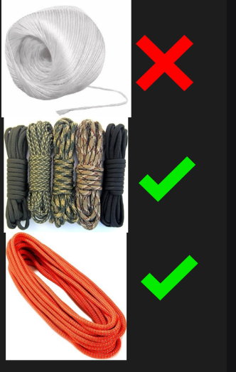
Gardez à l’esprit qu’il y a de nombreux facteurs à considérer, comme le degré de mou ou de tension que nous pouvons nous permettre pour le tagline, le poids des sangles, la force supplémentaire que le vent peut exercer dans ce processus.
CAPTURE DE PROGRESSION
Tout aussi important pour ce processus : disposer d’un système pour capturer la progression (éviter que la cordelette ne revienne si l’on cesse de la tirer).
Cela peut aller du plus simple, comme un demi-cabestan (munter) avec un noeud de blocage, en passant par des dispositifs à poulie et dents comme le microtraxion, jusqu’à des solutions plus technologiques comme un treuil.
Le plus important est de connaître les limites de chacun de ces systèmes, car il arrive souvent que les taglines cassent pendant ce processus, ce qui peut nous mener à une situation dangereuse.
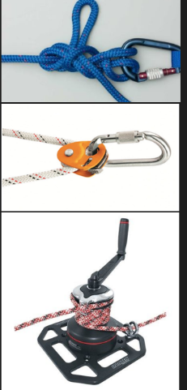
LIBÉRATION
Tout comme d’un côté nous devons capturer la progression, de l’autre côté nous devons libérer la sangle pour qu’elle traverse, ET NOUS DEVONS LE FAIRE EN TOUTE SÉCURITÉ !
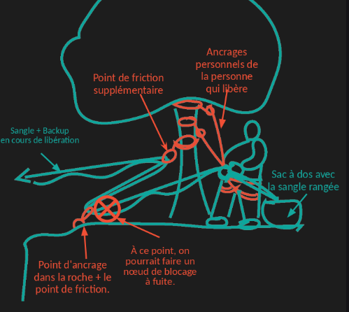
Pour cela, il faut générer de la friction au moment de libérer la sangle, afin de ne pas avoir a supporter directement le poids, et prévoir un moyen de la bloquer.
Nous pouvons y parvenir en créant des points de friction : plus il y en a, plus la répartition est grande et moindre est la force que nous devons retenir nous-mémes. Pour bloquer ce système, nous pouvons utiliser un nœud à ganse comme le noeud de mule.
Cette méthode simple s’appelle le Z-Drag.
Il est recommandé de le faire avec des mousquetons pour leur facilité d’ouverture, et avec un bon espace et une taille suffisante , car nous y ferons passer deux sangles. cela peut aussi etre réalisé avec des anneaux ou deltas mais sera moins pratique.
Il existe aussi des dispositifs de friction concus spécialement pour cette usage en Highline de type “BIG EIGHT” qui ressemble à une 8 d’assurage géant.
Tension de la sangle
LINEGRABS ou Linegrips
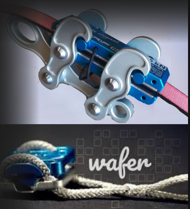
Après avoir construit nos ancrages selon les standards du FRENAS et ISA et avoir fait traverser la sangle avec le Tagline, il ne restera plus qu’à connecter correctement la sangle aux éléments de blocage ( banana) et connecter le backup. N’oubliez pas de passer les anneaux !!
Une fois cela fait, pour que la ligne puisse être utilisée, il ne restera qu’à lui donner une tension adéquate. Pour cela, nous aurons besoin d’un système de tension.
Un élément essentiel est un « presse-sangle » ou LINEGRAB ou LINE GRIP, dont nous aurons besoin pour ce processus, quelle que soit la méthode de tension utilisée.
Ce n’est pas un élément de sécurité, car il ne doit JAMAIS rester impliqué dans le système après la mise en tension. II est important de ne pas les utiliser au-dela de leur WLL, car ils peuvent glisser et endommager la sangle et vous mettre en danger.
Il en existe une grande variété sur le marché, mais les plus qualitatifs et fiables sont le Line Grip (marque Line Grip) et le wafer (Balance Community).
autre noms : snatch , mousegrip ; woodgrip
(« Linegrip » est une marque déposée, mais désigne aussi le système de retenue temporaire de sangle utilisé en highline. Linegrip désigne ici le produit de la marque, tandis que linegrip évoque le système de manière générale).
Le Linegrip est le premier système mécanique de grip permettant de retirer le mouflage lors de la pratique. Il s’agit d’un système qui permet de tendre la ligne principale en la bloquant par des mâchoires pendant la tension pour ensuite être relayé par un bloqueur de sangle type banana.
Des systèmes plus légers mais moins résistants ont été élaborés en substitut. Les linegrip génériques permettent de transférer la force de serrage sur la sangle grâce à l’action de serrage d’une cordelette (en dyneema) reliée au système de mouflage. Si le Linegrip a une charge de travail allant jusqu’à 15 kN, les linegrip légers permettent d’atteindre une charge de travail n’excédant pas 7 kN. Une vigilance particulière doit être apportée à ces derniers qui peuvent glisser dès 5 kN (voire moins) sur la sangle lors de la tension, notamment sur les sangles hybrides type dyneema.
POULIES
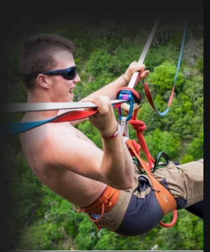
Pour la tension, nous aurons aussi besoin d’ un sytème de poulies qui nous aide à obtenir un avantage mécanique avec le linegrip. Il existe des systèmes composés qui peuvent donner un grand avantage mécanique, mais les expliquer dépasse le cadre de ce séminaire
Mais heureusement, si nous avons tout le matériel de base pour notre sécurité personnelle, nous disposons déjà d’une poulie pour sangle ! Idéale pour ce processus.
Eh oui, avec notre Line-slide, nous avons déjà une poulie que nous pourrons utiliser avec le line-grip pour réaliser le système de tension le plus simple en Highline le Système Buckingham (nommé d’après son créateur Thomas Buckingham). Ce système ne fonctionne que si nous avons un weblock, car, comme nous l’avons vu, celui-ci peut servir de dispositif de capture progression pour la sangle.
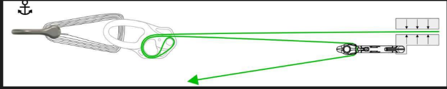
Avec le linegrip , une poule de sangle, un banana (weblock) et la sangle elle-même, nous créerons un système 3:1 qui nous permet de tendre efficacement la highline à l’aide de plusieurs personnes. Il est possible de complexifier ce système pour obtenir plus d’avantage mécanique si l’on dispose de poulies /et/ou de linegrip suplementaires.
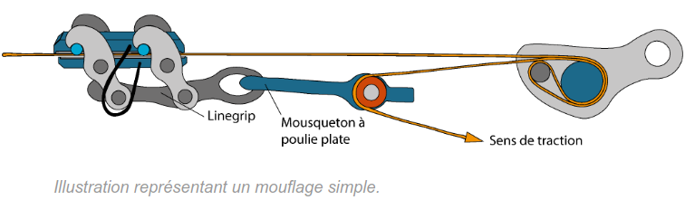
De-rigging
- Le de-rigging, ou démontage, est ce moment triste où il est temps de terminerla mission. Mais cela peut être encore plus triste si nous faisons des erreurs et provoquons des accidents ou des dommages à notre matériel ; c’est pourquoi il est essentiel de connaître une méthode sûre.
Pour un derig sûr, nous aurons besoin de 4 composants de base :
- Système pour libérer la tension
- Tagline
- Système de libération.
- Systeme de capture de progression- Comme nous pouvons le voir, les processus sont très similaires à celui du rigging, ils se déroulent de maniére un peu différente.
LIBÉRER LA TENSION
Il existe principalement deux façons de libérer la tension d’une sangle : avec des poulies (soft-pont) et avec un soft release. La première est plus complexe et demande plus de matériel ; il est important de la connaître, mais comme il s’agit d’un séminaire de base, nous recommanderons l’usage du Soft-Release.
Au moment d’utiliser le soft release, il faut d’abord défaire tous les nœuds ou connexions qui pourraient empêcher la tension de se libérer comme souhaité et nous mettre en difficulté.
Il faut s’assurer d’avoir un soft-release suffisamment long pour libérer la tension sans perdre le contrôle ; si le soft release est trop court, il faut préparer un système auxiliaire pour libérer plus de tension une fois la longueur du soft release épuisée.
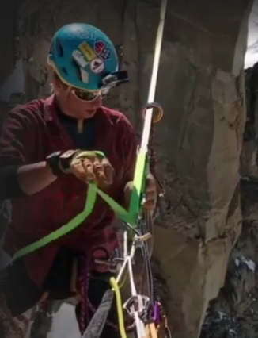
CONNECTER LE FICELOU
Rien ne nous empêche de connecter la tagline à l’extrémité des sangles de notre côté statique avant de libérer la tension ; nous pouvons le faire avant cette étape.
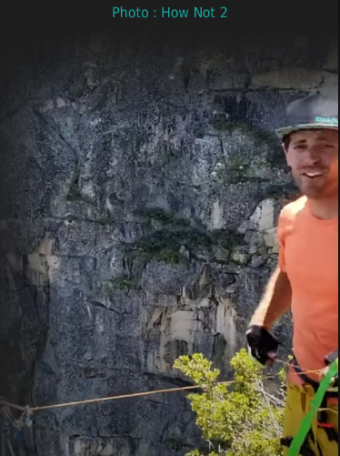
Une fois la tension de la sangle libérée, nous pouvons repasser le système sur une tagline ; comme pour le rigging, nous utiliserons cet élément pour faire passer les lignes par-dessus le précipice et éviter qu’elles ne s’abiment ou ne se coincent.
- Il est important que notre tagline ait une résistance adéquate pour ne pas casser lorsqu’on recommencera à charger la sangle, et qu’il soit préalablement bien organisé et préparé dans un système de libération ( Frein/zdrag).
LIBÉRATION
Lors du derigging, nous devrons libérer le tagline au lieu de la sangle ; ce processus est un peu plus simple car nous n’avons qu’un seul brin de corde d’un diamètre plus petit.
Pour les lignes pas trop longues, nous pouvons utiliser un dispositif de rappel tel qu’un huit de rappel, un ATC, un rack ou similaire, qui nous permettra de créer un point de friction et de libération contrôlée. Nous pouvons aussi simplement utiliser le nœud de Munter ou un ZDRAG son inconvénient est qu’il crée des vrilles dans la sangle.
Pour les lignes plus longues, il faut augmenter le nombre de points de
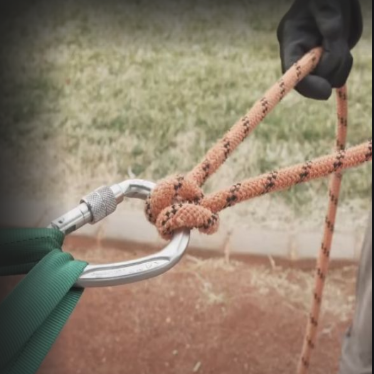

friction en créant un Z-Drag comme celui que nous avons vu précédemment. On peut aussi combiner les deux methodes avec un dispositif de rappel en arrière d’un z drag par exemple. - Pour toutes ces méthodes, n’oublions pas d’utiliser un nœud de blocage facilement liberable, au cas où nous devrions bloquer le système momentanément.
CAPTURE DE PROGRESSION.
Lors du derigging, la capture de progression à réaliser est celle des sangles.
En général, sur les lignes courtes et quand il y a assez de monde pour aider, la façon la plus simple est que tout le monde aide en tirant sur la sangle. (correctement assurés pour éviter les accidents).
Sur les lignes plus longues ou quand peu de personnes réalisent le démontage, il sera utile d’avoir une poulie pour rediriger la sangle et obtenir un peu d’avantage mécanique.
Pour bloquer ce système, nous pouvons opter pour un nœud gansé comme le nœud de mule, ou un système auxiliaire avec un linegrip pour maintenir la sangle si l’on doit mettre la capture en pause et utiliser ses mains.
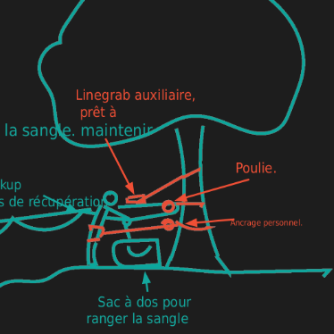
NETTOYAGE DU SITE
Une fois la sangle récupérée, il ne restera plus qu’à nettoyer le site, c’est-à-dire démonter les ancrages, ranger tout le matériel dans les sacs et, surtout : NE LAISSER AUCUNE TRACE !
Rappelons que nous cherchons a aborder chaque lieu avec respect et à limiter notre impact sur celui-ci ; veillons à donner une bonne réputation aux highliners à cet égard.
RÉSUMÉ DU PROCESSUS D’UN RIGGING.